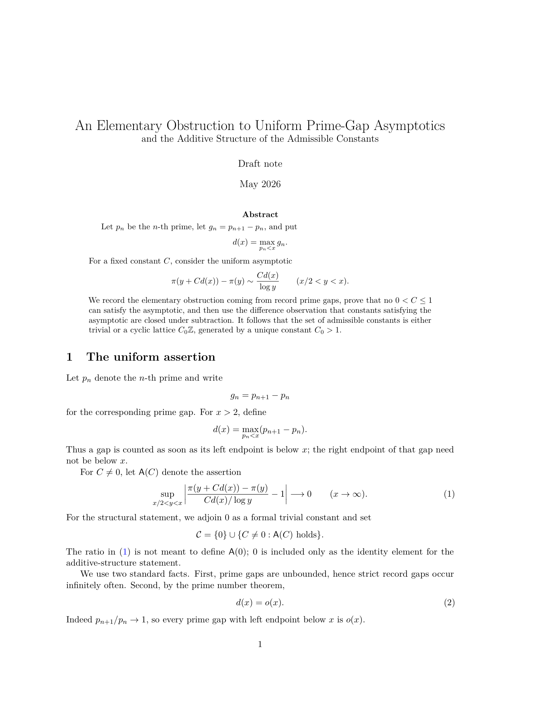

Papers
An Elementary Obstruction to Uniform Prime-Gap Asymptotics
May 2026
Disproof to Erdos Problem #1138. Formulated with Hrishi Sunder and Kireet Cheri.
Includes insights from Terence Tao, Wouter Van Doorn, & Lean 4
formalization by Lorenzo Luccioli.
Discussion available at
https://www.erdosproblems.com/1138.
